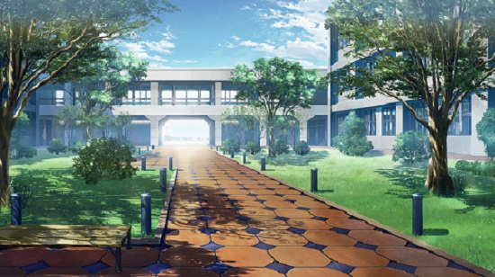

For my final project, I decided to make a continuation of my Net Art Project, the short, virtual friend-maker visual novel! Writing story and creating art and characters through the use of HTML and CSS is a way for me to combine my interest in digital art, game design, and web design into one, interactive and friendly place for all to enjoy.
Click below to make a more new friends!
